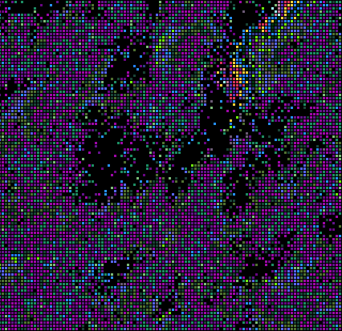

Critters: A Biology Inspired Evolution Simulation
Critters is an evolution simulation where a large number of individuals (critters) fight, eat, and reproduce. (NOTE: The github is probably sorely out of date.) Each critter can occupy a single location on a 2D grid, and every iteration of the simulation it must choose what to do. The actions available to the critter are move, attack neighbor, and mate with neighbor. The critters make these decisions based on their genetic code, and that genetic code (initially random) is passed on and mutated over generations. Importantly, critters can only mate with their own species, and can only attack other species. Attacking increases the longevity of an individual (as if eating prey so as not to starve), but is a trade off with taking time to reproduce. Tuning the parameters of the simulation generates different behaviors.
A javascript version (critters.js) is runnable here.
 In this simulation, the purple species has become the dominant critter, but other species are always evolving and competing for spatial and food resources.
 Here a population of critters goes from a chaotic, noisy soup to a blooming stable colony of many species.
Here a population of critters goes from a chaotic, noisy soup to a blooming stable colony of many species.